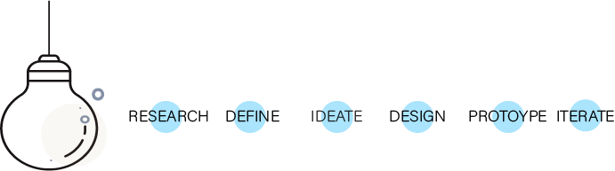

Client: HackUpstate 2018
Team: Alexander Jansing, Jennifer Tran, Zhushun Cai, Oliver Medonza
Role: UI/UX Design, Front End Dev
Tools: Adobe XD, Figma
Deliverables: Website Prototype
Challenge
“What if two houses are significantly far apart, open at similar times,
and there are other houses in each of their respective neighborhoods that open at different times?
Is there a way I can plan my day of house hunting so that I can attend all of the open houses?”
Overview
In an effort to make the home buying process more efficient, my team and I built a mobile that allows users to search for open houses based on their personal preferences.For instance, a user can search for open houses in their area based on date and location. They can then optimize their route in a way that maximizes the number of open houses they can visit in a single trip.
Process

Research
Contextual Inquiry Interviews
We had a 24hr window to complete this project. Lucky for us we were able to conduct contextual inquiry interviews
with some of the hackUpstate participants. In order to to undertand and learn more about the home buying process,
we specifically looked for partcipant who have gone through the process of attending an open house.
# of participants: 2 | Age: 30 & 36 | Gender: 2 males
Define
Persona
To define the target user and understand their needs
Ideate
Sitemap
We then created a sitemap in order to visualize the information architecture of the app.
Time constraint played a role in mapping the site, we wanted it to be a quick and easy interaction.


Prototype
Visual design using Adobe XD and Photoshop | note: resolution is different due to resizing
Usability Test
Recorded interactions using InVision
Objective: To determine users wants and needs
User Task: Users were instructed to navigate as if navigating through an apartment search website like Zillow
Results: The two participants reported that the interface was visualy pleasing and that the naviagtion is simple. One user suggested that we add features like " start from current location",
this means we will need to ask the user for their location at the start of their search
Iterate
BrandingBefore creating a visual design, we came up with a brand. Our colors were inspired by a "coffee" mood board we came across
Reflection
To build the web application we used HTML , CSS, and Javascript. For the route optimization algorithm, we used the Esri ArcGIS ,and a Javascript API. We also tried to the use the ArcGIS Python API to develop a function that could optimize routes by location and based on open times. Unfortunatly, the Hackaton was 24hrs, therefore we did not have time to develop the interface into a working prototype.
Next Steps
From suggestions there many features will need to add to this application. For next steps we
will focus on refining the design, user flow as well as the route optimization.
One more thing : We WON! the Hackaton Medium Article